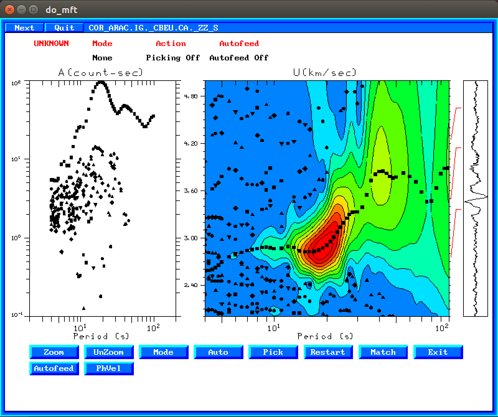
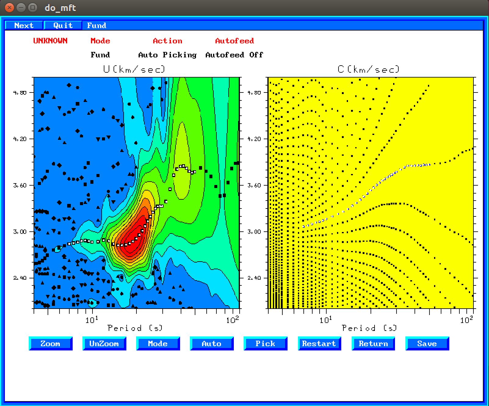
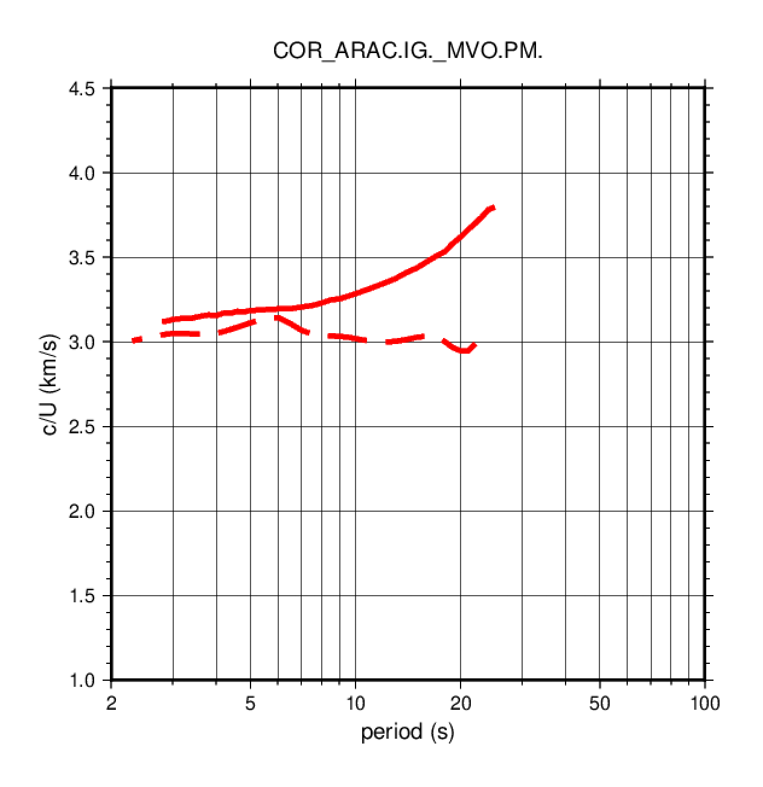
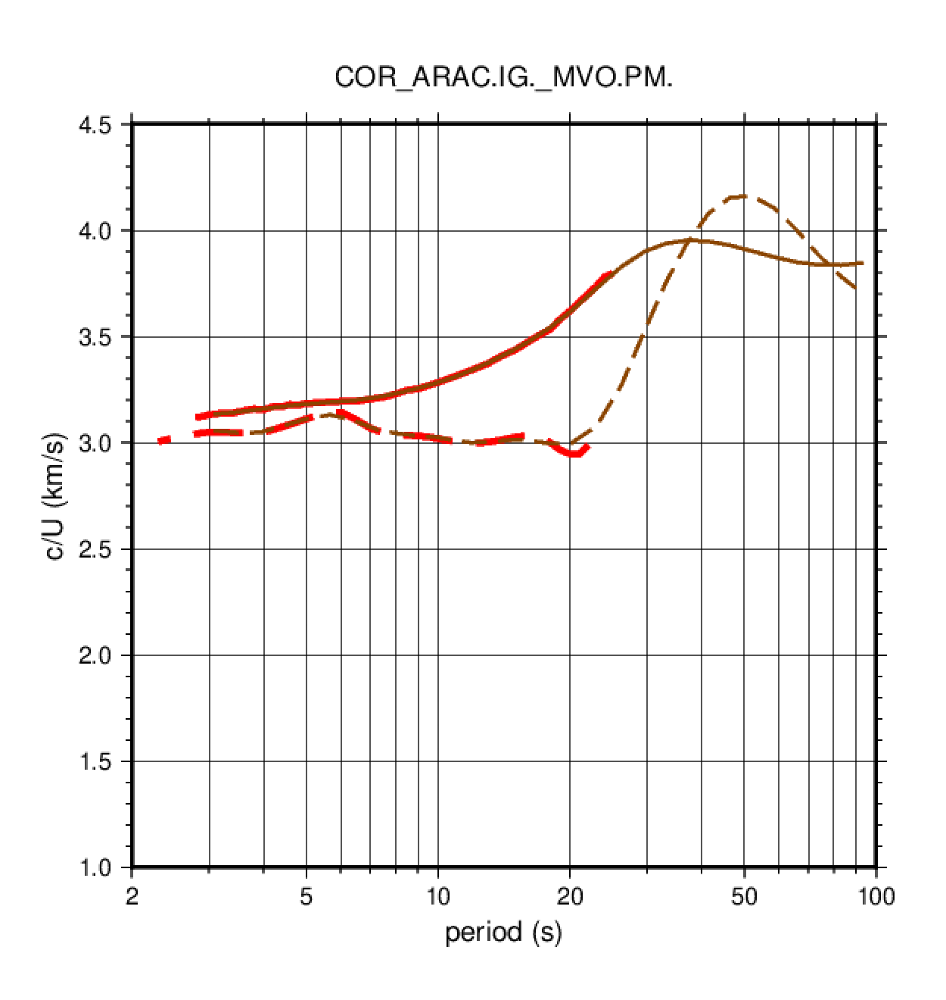

3. Procesado de correlaciones de ruido ambiente
En este ejercicio realizaremos medidas de velocidad de fase y de grupo
utilizando un método manual (do_mft) y un método automático.
Los datos que utilizaremos son correlaciones simétricas (promedio de la parte causal y acausal) para estaciones en la Península Ibérica, Marruecos y Canarias. En particular utilizaremos correlaciones entre la estación ARAC (Aracena, Huelva) con todas las demás estaciones de banda ancha con datos disponibles.
3.1. Procesado manual con do_mft
La medida de curvas de dispersión para correlaciones de ruido ambiente con
do_mft es igual a la medida para registros de terremotos, excepto que,
al conocer la fuente de la correlación (fuerza impulsiva vertical) podemos
medir también la velocidad de fase (y no solo la de grupo como en el caso
de los terremotos).
Ir al directorio que contiene los archivos con las correlaciones de ruido ambiente:
$ cd
$ cd exercises/correlations
$ ls # ver el contenido del directorio
Los archivos de correlación contienen el código de las dos estaciones utilizadas
y el sufijo _ZZ_S que indica que es una correlación simétrica (_S) entre
componentes verticales (ZZ).
Para seleccionar las velocidades de fase y de grupo de las correlaciones
de forma manual, ejecutar do_mft con las siguientes opciones:
$ do_mft -G -IG *_ZZ_S
La pantalla que aparece es igual a la que obteníamos en el caso de terremotos,
excepto que aprarece una opción adicional: PhVel

Seleccionar la velocidad de grupo siguiendo los mismos pasos que en el ejercicio 1.
Cuando esté seleccionada hacer click en PhVel. Entonces aparecerá la pantalla siguiente:
En el panel de la derecha se muestra de nuevo el análisis FTAN, y en el de la
izquierda las posibles curvas de velocidad de fase. Hay que seleccionar la curva
que tenga unos valores de la velocidad similares (un poco superiores) a la curva
de velocidad de grupo y/o unos valores razonables para periodos largos.
La selección se hace de la misma forma que con la velocidad de
grupo, pulsando primero Auto y después haciendo click sobre los puntos que se
quieren seleccionar. Los puntos seleccionados cambian a color blanco, como se
muestra en la siguiente figura:

También cambian a color blanco los puntos equivalentes el la curva de velocidad de grupo.
Para salvar la curva de velocidad de fase hacer click en Save. Esto generará
un archivo con el mismo nombre que el archivo del sismograma, añadiéndole la
extensión .phv. Después de guardar el archivo de velocidad de fase el programa
vuelve a la pantalla de velocidad de grupo. En esta hay que pulsar Exit para
guardar el archivo con la velocidad de grupo (extensión .dsp).
Seleccionar por ejemplo el archivo COR_ARAC.IG._MVO.PM._ZZ_S, que es el
resultado de correlacionar las componentes verticales (Z) de las estaciones
ARAC (Aracena) y MVO (Marvao, Portugal). Realizar la medida de la velocidad de
fase y de grupo y guardar los resultados (archivos COR_ARAC.IG._MVO.PM._ZZ_S.phv y
COR_ARAC.IG._MVO.PM._ZZ_S.dsp respectivamente). Estas curvas pueden visualizarse
utilizando el script plot_aftan_disp.sh:
$ plot_aftan_disp.sh COR_ARAC.IG._MVO.PM. # COR_ARAC.IG._MVO.PM. es el prefijo de los archivos .dsp y .phv
El script producirá un warning de que faltan ciertos archivos (esto es normal puesto que no han sido creados todavía)
y generará un archivo en formato PostScript COR_ARAC.IG._MVO.PM..ps que puede visualizarse con el programa gv:
$ gv COR_ARAC.IG._MVO.PM..ps # presionar "q" para salir de gv

La curva obtenida debe ser similar a la figura previa. La línea continua roja corresponde a la velocidad de fase de la onda Rayleigh y la línea discontinua roja la velocidad de grupo.
Debe observarse que la velocidad de grupo es inferior a la velocidad de fase. La velocidad de fase en general será creciente con el periodo, mientras que la velocidad de grupo puede decrecer y presentar máximos y/o mínimos. verify that phase velocity curves usually do not have minima, while group velocities often have.
3.2. Procesado automático utilizando FTAN
Crear un archivo de parámetros llamado aftan.par(p.e. utilizando gedit) que contenga esta línea:
-1 1.0 5.0 2 100 20 1 0.5 0.2 2 COR_ARAC.IG._MVO.PM._ZZ_S
El significado de los valores en las diferentes columnas es el siguiente:
- valor interno (ha de ser siempre -1)
- velocidad mínima (km/s)
- velocidad máxima (km/s)
- periodo mínimo (segundos)
- periodo máximo (segundos)
- umbral (threshold). Normalmente 10 ó 20
- factor para el parámetro de filtrado
- factor para el taper a la izquierda del sismograma
- signal-to-noise ratio para el phase-matched filter
- factor para determinar la ventana del phase-matched filter
- nombre del archivo con el sismograma/correlación a procesar
Además del archivo de parámetros aftan.par también es necesario un archivo que contenga
una curva de velocidad de fase de referencia (promedio). Este archivo se utiliza para hacer
el phase-unwrapping a periodos largos y poder decidir la curva de velocidad de fase correcta.
El archivo ha de tener el nombre avg_phvel.dat
y su contenido es simplemente una tabla con dos columnas:
periodo (s) versus velocidad de fase (Rayleigh o Love):
25 3.67411208
29 3.731354
33 3.7900126
40 3.83514428
50 3.85978866
66 3.89791131
83 3.94684219
100 4.00932217
El programa que lleva a cabo el análisis FTAN de forma automática se llama aftani_c_pgl y se ejecuta
de la siguiente forma:
$ aftani_c_pgl aftan.par
El programa genera muchos archivos de salida por cada sismograma. El ouptut final está en el archivo
con el sufijo _2_DISP.1. En particular, el archivo COR_ARAC.IG._MVO.PM._ZZ_S_2_DISP.1 debería
tener el siguiente ascpecto:
0 2.4990 3.0738 3.0559 3.1335 89.2118 26.546
1 2.8116 3.1951 3.0545 3.1366 95.1781 18.675
2 3.1634 3.3792 3.0490 3.1416 98.6959 21.576
3 3.5591 3.6418 3.0442 3.1492 100.0007 43.248
4 4.0043 3.9751 3.0510 3.1592 99.5837 48.041
5 4.5052 4.4000 3.0775 3.1703 97.9055 38.064
6 5.0687 4.9757 3.1094 3.1813 95.7282 26.265
7 5.7028 5.6677 3.1311 3.1901 94.0639 34.596
8 6.4162 6.4176 3.1042 3.1983 92.8465 112.891
9 7.2188 7.4175 3.0536 3.2166 92.2072 16.057
10 8.1218 8.7391 3.0346 3.2492 93.0338 13.191
11 9.1377 9.9074 3.0261 3.2804 95.5471 98.594
12 10.2808 10.8113 3.0117 3.3062 97.7322 102.493
13 11.5668 11.8363 3.0007 3.3376 98.5755 91.330
14 13.0137 13.1025 3.0022 3.3784 98.3737 184.567
15 14.6417 14.5310 3.0122 3.4247 97.4745 177.030
16 16.4732 16.0903 3.0118 3.4755 95.8104 78.610
17 18.5339 17.9128 2.9961 3.5380 93.3626 70.694
18 20.8523 20.1754 2.9984 3.6215 90.5481 168.184
19 23.4607 22.9816 3.0772 3.7260 88.0634 158.935
20 26.3955 26.2221 3.2712 3.8283 86.3873 60.217
21 29.6973 29.5927 3.5260 3.8993 85.2403 153.496
22 33.4122 33.1429 3.7558 3.9379 84.0305 151.759
23 37.5918 37.0773 3.9421 3.9523 82.5334 148.996
24 42.2942 41.5040 4.0807 3.9475 80.7447 148.715
25 47.5848 46.5026 4.1547 3.9284 78.7052 149.816
26 53.5373 52.1546 4.1597 3.9017 76.4666 141.282
27 60.2344 58.5435 4.1048 3.8736 74.0783 135.621
28 67.7692 65.7614 4.0021 3.8502 71.5822 128.444
29 76.2465 73.9076 3.8824 3.8368 69.0113 120.928
30 85.7843 83.0915 3.7825 3.8357 66.3888 116.806
31 96.5152 93.4423 3.6997 3.8459 63.7319 113.398
El significado de las columnas relevantes es:
- número de medida
- periodo nominal de la medida (segundos)
- periodo instantáneo de la medida (segundos); este es el valor que nos interesa
- velocidad de grupo (km/s)
- velocidad de fase (km/s)
El archivo resultante COR_ARAC.IG._MVO.PM._ZZ_S_2_DISP.1 puede dibujarse también
con el mismo script que utilizamos para las medidas manuales con do_mft:
$ plot_aftan_disp.sh COR_ARAC.IG._MVO.PM.
$ gv COR_ARAC.IG._MVO.PM..ps
Si para el mismo par de estaciones existen medidas hechas con do_mft y con
aftani_c_pgl se superpondrán en el mismo dibujo:

En la gráfica superior las curvas en marrón corresponden a las medidas obtenidas
con el método automático aftani_c_pgl, y las rojas con el método manual do_mft.
En ambos casos las líneas continuas corresponden a velocidad de fase, y las
discontinuas a velocidad de grupo.
Ejercicio: Cómo haríais para procesar todos los archivos de correlación en el directorio de trabajo (455 archivos).